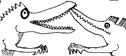
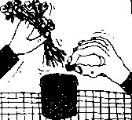
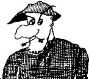

Wednesday, March the 31th, 2004
back to: title, date or indexes
Jasper Poxhaven has claimed that Dobson had as many unrealised or aborted projects as there were published pamphlets—and we know how numerous they were! Perhaps the most ambitious of these abandoned works is the gargantuan Dobson's Illustrated Encyclopaedia Of Unnecessary Knowledge. From notes scrawled higgledypiggledy in various notebooks, we know that the projected work was to extend to forty thick volumes of tiny, tiny print, with upwards of twenty thousand articles containing millions of words. Some of the pieces were indeed written and appeared as pamphlets, but until recently it was thought none of the proposed illustrations were ever executed. At a Port of Tongs jumble sale, however, Mrs Gubbins' nephew happened upon a cardboard box full of detritus, buried in which were three drawings. Subjected to tremendously exciting forensic analysis by a scientist known only to Jasper Poxhaven as “man with unwashed hair”, the pictures have now been authenticated. They were drawn by Marigold Chew to accompany three of Dobson's encyclopaedia articles; alas and alack, not one of the three was ever written. We are proud to publish the pictures here, together with Mr Poxhaven's brief notes. We have given each its own Hooting Yard paragraph-break, because that's the kind of thing we do, especially on Wednesdays.

It is possible that some trace of Dobson's text for this article can be found in his pamphlet How And Why I Built Eight Small Pâpier Maché Brontosauruses.

It is unclear what Dobson meant by the title of this proposed article. Ms Chew's illustation is similarly perplexing. I have applied for a grant which will allow me to devote the next four years to unravelling the mystery.

Self-explanatory.